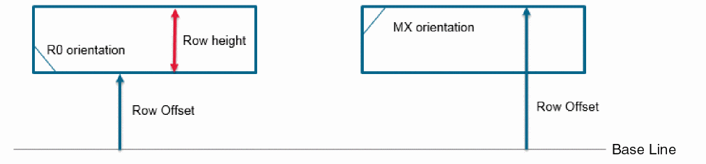

Row Attributes
The following figure depicts a row and its attributes:
|
Term
|
Description
|
|
Row Edge
|
Row edge is defined by the row offset and row height values.
The reference edge is specified by the row offset value. The other edge is at a distance equal to the row height away from the reference edge.
|
|
Row Orientation
|
Is the orientation of the row with respect to the x and y axes.
The two possible row orientations are: no orientation (R0) and mirrored orientation along the x axis (MX).
If the row orientation is R0, the row height is measured as a positive value from the bottom edge. If the row orientation is MX, the row height is measured from top to bottom.
|
|
Row Offset
|
Refers to the distance from the base line to the reference edge.
The reference edge depends on the row orientation. When the row orientation is R0, the reference edge is at the bottom and the row offset is the distance from the base line to the bottom edge. However, when the row orientation is MX (mirrored), the reference edge is at the top and the row offset defines the distance from the base line to the top edge, as indicated in the right-hand figure.
|
|
Row Height
|
Is the distance between the top and bottom edges of the row.
|

Related Topics
Introduction to Row Infrastructure
Row Templates
Row Generation
Return to top